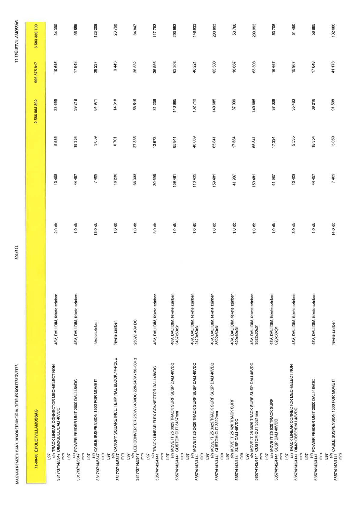

| Tétel | Menny. | Egys. | Anyag e.ár (net HUF) | Díj e.ár (net HUF) | Anyag összesen (net HUF) | Díj összesen (net HUF) | Anyag+Díj összesen (net HUF) |
|---|---|---|---|---|---|---|---|
| 71-00-00 ÉPÜLETVILLAMOSSÁG | NaN | NaN | 0 | 0 | 2 586 804 892 | 996 575 817 | 3 583 380 709 |
| 48V, DALI DIM, fekete színben | 0 | 0 | 0 | 0 | 0 | 0 | 0 |
| L97 sín TRACK LINEAR CONNECTOR MECH/ELECT NON DIM/ZIGBEE/DALI 48VDC 3817/3714/5347 mm | 2,0 | db | 13 408 | 5 535 | 23 655 | 10 645 | 34 300 |
| 48V, DALI DIM, fekete színben | 0 | 0 | 0 | 0 | 0 | 0 | 0 |
| L97 sín POWER FEEDER UNIT 2000 DALI 48VDC 3817/3714/5347 mm | 1,0 | db | 44 457 | 18 354 | 39 218 | 17 648 | 56 865 |
| fekete színben | 0 | 0 | 0 | 0 | 0 | 0 | 0 |
| L97 sín CABLE SUSPENSION 1500 FOR MOVE IT 3817/3714/5347 mm | 13,0 | db | 7 409 | 3 059 | 84 971 | 38 237 | 123 208 |
| fekete színben | 0 | 0 | 0 | 0 | 0 | 0 | 0 |
| L97 sín CANOPY SQUARE INCL TERMINAL BLOCK / 4-POLE 3817/3714/5347 mm | 1,0 | db | 16 230 | 6 701 | 14 318 | 6 443 | 20 760 |
| 250W, 48V DC | 0 | 0 | 0 | 0 | 0 | 0 | 0 |
| L97 sín LED CONVERTER 250W / 48VDC 220-240V / 50-60Hz 3817/3714/5347 mm | 1,0 | db | 66 333 | 27 385 | 58 515 | 26 332 | 84 847 |
| 48V, DALI DIM, fekete színben | 0 | 0 | 0 | 0 | 0 | 0 | 0 |
| L97 sín TRACK LINEAR FLEX CONNECTOR DALI 48VDC 5857/4142/4141 mm | 3,0 | db | 30 696 | 12 673 | 81 236 | 36 556 | 117 793 |
| 48V, DALI DIM, fekete színben, 3437x60x31 | 0 | 0 | 0 | 0 | 0 | 0 | 0 |
| L97 sín MOVE IT 25 3625 TRACK SURF SUSP DALI 48VDC CUSTOM CUT 3437mm 5857/4142/4141 mm | 1,0 | db | 159 481 | 65 841 | 140 685 | 63 308 | 203 993 |
| 48V, DALI DIM, fekete színben, 2420x60x31 | 0 | 0 | 0 | 0 | 0 | 0 | 0 |
| L97 sín MOVE IT 25 2420 TRACK SURF SUSP DALI 48VDC 5857/4142/4141 mm | 1,0 | db | 116 435 | 48 069 | 102 713 | 46 221 | 148 933 |
| 48V, DALI DIM, fekete színben, 3522x60x31 | 0 | 0 | 0 | 0 | 0 | 0 | 0 |
| L97 sín MOVE IT 25 3625 TRACK SURF SUSP DALI 48VDC CUSTOM CUT 3522mm 5857/4142/4141 mm | 1,0 | db | 159 481 | 65 841 | 140 685 | 63 308 | 203 993 |
| 48V, DALI DIM, fekete színben, 620x60x31 | 0 | 0 | 0 | 0 | 0 | 0 | 0 |
| L97 sín MOVE IT 25 620 TRACK SURF SUSP DALI 48VDC 5857/4142/4141 mm | 1,0 | db | 41 987 | 17 334 | 37 039 | 16 667 | 53 706 |
| 48V, DALI DIM, fekete színben, 3522x60x31 | 0 | 0 | 0 | 0 | 0 | 0 | 0 |
| L97 sín MOVE IT 25 3625 TRACK SURF SUSP DALI 48VDC CUSTOM CUT 3521mm 5857/4142/4141 mm | 1,0 | db | 159 481 | 65 841 | 140 685 | 63 308 | 203 993 |
| 48V, DALI DIM, fekete színben, 620x60x31 | 0 | 0 | 0 | 0 | 0 | 0 | 0 |
| L97 sín MOVE IT 25 620 TRACK SURF SUSP DALI 48VDC 5857/4142/4141 mm | 1,0 | db | 41 987 | 17 334 | 37 039 | 16 667 | 53 706 |
| 48V, DALI DIM, fekete színben | 0 | 0 | 0 | 0 | 0 | 0 | 0 |
| L97 sín TRACK LINEAR CONNECTOR MECH/ELECT NON DIM/ZIGBEE/DALI 48VDC 5857/4142/4141 mm | 3,0 | db | 13 408 | 5 535 | 35 483 | 15 967 | 51 450 |
| 48V, DALI DIM, fekete színben | 0 | 0 | 0 | 0 | 0 | 0 | 0 |
| L97 sín POWER FEEDER UNIT 2000 DALI 48VDC 5857/4142/4141 mm | 1,0 | db | 44 457 | 18 354 | 39 218 | 17 648 | 56 865 |
| fekete színben | 0 | 0 | 0 | 0 | 0 | 0 | 0 |
| L97 sín CABLE SUSPENSION 1500 FOR MOVE IT 5857/4142/4141 mm | 14,0 | db | 7 409 | 3 059 | 91 508 | 41 178 | 132 686 |
